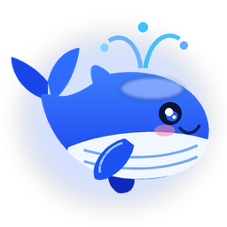

DeepWhale
陪伴模式
DeepSeek 鲸鱼桌面智能伴侣
💰 --
─
✕
💬 实时对话
🌟 养成与人设
⚙️ API 与设置
⚡ V3 对话
🧠 R1 深度思考
📋 解读剪贴板
🗑️ 清空
🐳 深海小鲸 · 元气伴侣
⏹ 停止
发送 ➤
🐳 深海小鲸
多和它聊天、摸头或投喂磷虾可提升羁绊等级
Lv.1
✨ 羁绊经验
25/100
💙 愉悦心情
90%
⚡ 深海活力
92%
0
累计对话
0
亲密摸头
0
投喂磷虾
🦐 投喂磷虾
🌊 表演喷水
📍 唤回右下角
🎭 切换小鲸性格人设
自定义专属 System Prompt（留空则使用上方所选人设）
💾 保存人设设置
🔑 AI 大模型接口配置
获取 DeepSeek Key ↗
支持 DeepSeek 官方 V3/R1 及任意 OpenAI 兼容接口
DeepSeek V3
DeepSeek R1
硅基流动
本地 Ollama
API Base URL
API Key
👁️
模型名称 (Model)
采样温度 (
0.7
)
🔌 测试连接
💰 查询余额
💾 保存配置
🖥️ 桌宠行为与语音偏好
🧭 桌面自由巡游
开启后小鲸会在任务栏上方悠闲左右畅游
📌 窗口始终置顶
保持小鲸与对话舱悬浮在其他软件上方
🔊 海洋互动音效
摸头鲸鸣、喷水水泡与投喂提示合成音
🗣️ AI 回复语音播报 (TTS)
收到回复后使用系统中文语音温柔朗读
🔒 专注模式（锁定鼠标完全穿透）
开启后小鲸完全不响应鼠标点击，可通过托盘或本开关恢复